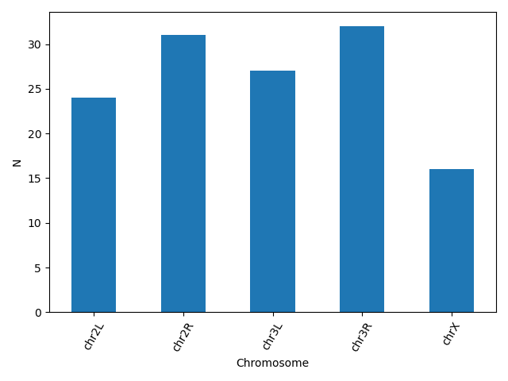
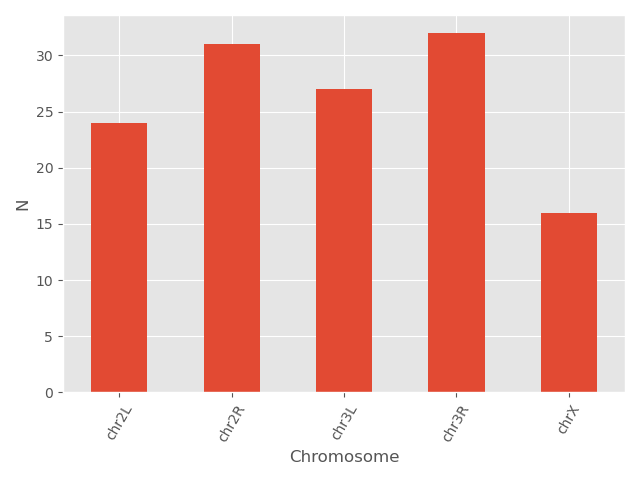

Plotting in Python
 Maria Christina Maniou
Maria Christina Maniou
 Fotis E. Psomopoulos
Fotis E. Psomopoulos
 The Carpentries
The Carpentries
 Erasmus+ Programme
hall-of-fameAdd Contributions!
Erasmus+ Programme
hall-of-fameAdd Contributions!
Overview
Questions:Objectives:
How can I create plots using Python in Galaxy?
Requirements:
Use the scientific library matplolib to explore tabular datasets
- Foundations of Data Science
- Introduction to Python: tutorial hands-on
Time estimation: 1 hourLevel: Intermediate IntermediateSupporting Materials:Last modification: Dec 14, 2021
 Questions:
Questions:
Best viewed in a Jupyter Notebook
This tutorial is best viewed in a Jupyter notebook! You can load this notebook in Jupyter on one of the UseGalaxy.* servers
Launching the notebook in Jupyter in Galaxy
- Instructions to Launch JupyterLab
- Open a Terminal in JupyterLab with File -> New -> Terminal
- Run
wget https://training.galaxyproject.org/training-material/topics/data-science/tutorials/python-plotting/data-science-python-plotting.ipynb- Select the notebook that appears in the list of files on the left.
Downloading the notebook
- Right click this link: Jupyter Notebook
- Save Link As..
In this lesson, we will be using Python 3 with some of its most popular scientific libraries. This tutorial assumes that the reader is familiar with the fundamentals of data analysis using the Python programming language, as well as, how to run Python programs using Galaxy. Otherwise, it is advised to follow the “Introduction to Python” and “Advanced Python” tutorials available in the same platform. We will be using JupyterNotebook, a Python interpreter that comes with everything we need for the lesson.
comment Comment
This tutorial is significantly based on the Carpentries Programming with Python and Plotting and Programming in Python, which is licensed CC-BY 4.0.
Adaptations have been made to make this work better in a GTN/Galaxy environment.
Agenda
In this tutorial, we will cover:
Plot data using matplotlib
For the purposes of this tutorial, we will use a file with the annotated differentially expressed genes that was produced in the Reference-based RNA-Seq data analysis tutorial.
Firstly, we read the file with the data.
data = pd.read_csv("https://zenodo.org/record/3477564/files/annotatedDEgenes.tabular", sep = "\t", index_col = 'GeneID')
print(data)
We can now use the DataFrame.info() method to find out more about a dataframe.
data.info()
We learn that this is a DataFrame. It consists of 130 rows and 12 columns. None of the columns contains any missing values. 6 columns contain 64-bit floating point float64 values, 2 contain 64-bit integer int64 values and 4 contain character object values. It uses 13.2KB of memory.
We now have a basic understanding of the dataset and we can move on to creating a few plots and further explore the data. matplotlib is the most widely used scientific plotting library in Python, especially the matplotlib.pyplot module.
import matplotlib.pyplot as plt
Simple plots are then (fairly) simple to create. You can use the plot() method and simply specify the data to be displayed in the x and y axis, by passing the data as the first and second argument. In the following example, we select a subset of the dataset and plot the P-value of each gene, using a lineplot.
subset = data.iloc[121:, :]
x = subset['P-value']
y = subset['Gene name']
plt.plot(x, y)
plt.xlabel('P-value')
plt.ylabel('Gene name')

We use Jupyter Notebook and so running the cell generates the figure directly below the code. The figure is also included in the Notebook document for future viewing. However, other Python environments like an interactive Python session started from a terminal or a Python script executed via the command line require an additional command to display the figure.
Instruct matplotlib to show a figure:
plt.show()
This command can also be used within a Notebook - for instance, to display multiple figures if several are created by a single cell.
If you want to save and download the image to your local machine, you can use the plt.savefig() command with the name of the file (png, pdf etc) as the argument. The file is saved in the Jupyter Notebook session and then you can download it. For example:
plt.tight_layout()
plt.savefig('foo.png')
plt.tight_layout() is used to make sure that no part of the image is cut off during saving.
When using dataframes, data is often generated and plotted to screen in one line, and plt.savefig() seems not to be a possible approach. One possibility to save the figure to file is then to save a reference to the current figure in a local variable (with plt.gcf()) and then call the savefig class method from that variable. For example, the previous plot:
subset = data.iloc[121:, :]
x = subset['P-value']
y = subset['Gene name']
fig = plt.gcf()
plt.plot(x, y)
fig.savefig('my_figure.png')
More about plots
You can use the plot() method directly on a dataframe. You can plot multiple lines in the same plot. Just specify more columns in the x or y axis argument. For example:
new_subset = data.iloc[0:10, :]
new_subset.loc[:, ['P-value', 'P-adj']].plot()
plt.xticks(range(0,len(new_subset.index)), new_subset['Gene name'], rotation=60)
plt.xlabel('Gene name')

In this example, we select a new subset of the dataset, but plot only the two columns P-value and P-adj. Then we use the plt.xticks() method to change the text and the rotation of the x axis.
Another useful plot type is the barplot. In the following example we plot the number of genes that belong to the different chromosomes of the dataset.
bar_data = data.groupby('Chromosome').size()
bar_data.plot(kind='bar')
plt.xticks(rotation=60)
plt.ylabel('N')

matplotlib supports also different plot styles from ather popular plotting libraries such as ggplot and seaborn. For example, the previous plot in ggplot style.
plt.style.use('ggplot')
bar_data = data.groupby('Chromosome').size()
bar_data.plot(kind='bar')
plt.xticks(rotation=60)
plt.ylabel('N')

You can also change different parameters and customize the plot.
plt.style.use('default')
bar_data = data.groupby('Chromosome').size()
bar_data.plot(kind='bar', color = 'red', edgecolor = 'black')
plt.xticks(rotation=60)
plt.ylabel('N')

Another useful type of plot is a scatter plot. In the following example we plot the Base mean of a subset of genes.
scatter_data = data[['Base mean', 'Gene name']].head(n = 15)
plt.scatter(scatter_data['Gene name'], scatter_data['Base mean'])
plt.xticks(rotation = 60)
plt.ylabel('Base mean')
plt.xlabel('Gene name')

question Question: Plotting
Using the same dataset, create a scatterplot of the average P-value for every chromosome for the “+” and the “-“ strand.
solution Solution
First find the data and save it in a new dataframe. Then create the scatterplot. You can even go one step further and assign different colors for the different strands.Note the use of the
mapmethod that assigns the different colors using a dictionary as an input.exercise_data = data.groupby(['Chromosome', 'Strand']).agg(mean_pvalue = ('P-value', 'mean')).reset_index() colors = {'+':'red', '-':'blue'} plt.scatter(x = exercise_data['Chromosome'], y = exercise_data['mean_pvalue'], c = exercise_data['Strand'].map(colors)) plt.ylabel('Average P-value') plt.xlabel('Chromosome')

Making your plots accessible
Whenever you are generating plots to go into a paper or a presentation, there are a few things you can do to make sure that everyone can understand your plots.
Always make sure your text is large enough to read. Use the fontsize parameter in xlabel, ylabel, title, and legend, and tick_params with labelsize to increase the text size of the numbers on your axes.
Similarly, you should make your graph elements easy to see. Use s to increase the size of your scatterplot markers and linewidth to increase the sizes of your plot lines.
Using color (and nothing else) to distinguish between different plot elements will make your plots unreadable to anyone who is colorblind, or who happens to have a black-and-white office printer. For lines, the linestyle parameter lets you use different types of lines. For scatterplots, marker lets you change the shape of your points.
Key points
Python has many libraries offering a variety of capabilities, which makes it popular for beginners, as well as, more experienced users
You can use scientific libraries like Matplotlib to perform exploratory data analysis.
Frequently Asked Questions
Have questions about this tutorial? Check out the tutorial FAQ page or the FAQ page for the Foundations of Data Science topic to see if your question is listed there. If not, please ask your question on the GTN Gitter Channel or the Galaxy Help ForumFeedback
Did you use this material as an instructor? Feel free to give us feedback on how it went.
Did you use this material as a learner or student? Click the form below to leave feedback.

Citing this Tutorial
- Maria Christina Maniou, Fotis E. Psomopoulos, The Carpentries, Erasmus+ Programme, 2021 Plotting in Python (Galaxy Training Materials). https://training.galaxyproject.org/training-material/topics/data-science/tutorials/python-plotting/tutorial.html Online; accessed TODAY
- Batut et al., 2018 Community-Driven Data Analysis Training for Biology Cell Systems 10.1016/j.cels.2018.05.012
details BibTeX
@misc{data-science-python-plotting, author = "Maria Christina Maniou and Fotis E. Psomopoulos and The Carpentries and Erasmus+ Programme", title = "Plotting in Python (Galaxy Training Materials)", year = "2021", month = "12", day = "14" url = "\url{https://training.galaxyproject.org/training-material/topics/data-science/tutorials/python-plotting/tutorial.html}", note = "[Online; accessed TODAY]" } @article{Batut_2018, doi = {10.1016/j.cels.2018.05.012}, url = {https://doi.org/10.1016%2Fj.cels.2018.05.012}, year = 2018, month = {jun}, publisher = {Elsevier {BV}}, volume = {6}, number = {6}, pages = {752--758.e1}, author = {B{\'{e}}r{\'{e}}nice Batut and Saskia Hiltemann and Andrea Bagnacani and Dannon Baker and Vivek Bhardwaj and Clemens Blank and Anthony Bretaudeau and Loraine Brillet-Gu{\'{e}}guen and Martin {\v{C}}ech and John Chilton and Dave Clements and Olivia Doppelt-Azeroual and Anika Erxleben and Mallory Ann Freeberg and Simon Gladman and Youri Hoogstrate and Hans-Rudolf Hotz and Torsten Houwaart and Pratik Jagtap and Delphine Larivi{\`{e}}re and Gildas Le Corguill{\'{e}} and Thomas Manke and Fabien Mareuil and Fidel Ram{\'{\i}}rez and Devon Ryan and Florian Christoph Sigloch and Nicola Soranzo and Joachim Wolff and Pavankumar Videm and Markus Wolfien and Aisanjiang Wubuli and Dilmurat Yusuf and James Taylor and Rolf Backofen and Anton Nekrutenko and Björn Grüning}, title = {Community-Driven Data Analysis Training for Biology}, journal = {Cell Systems} }
Congratulations on successfully completing this tutorial!
Do you want to extend your knowledge? Follow one of our recommended follow-up trainings: